|
Self Rolling Ball Final
Design and build of a structure, PCB, and software interface to create a robot which can be commanded direction and magnitude to roll at.
|
|
Self Rolling Ball Final
Design and build of a structure, PCB, and software interface to create a robot which can be commanded direction and magnitude to roll at.
|
Both boards required independently written software, however both boards also operate under simple and similar finite state machines. They both have identical IMU drivers which allow them to startup, calibrate and read Euler angles. Additionally, the main board has several motor specific drivers. The first enables the motors and allows continuous updates of duty cycle to each motor simply by updating motor structures. The second processes the IMU data from both boards to calculate the target duty from each board. More details on how this duty is calculated can be found in the section titled “Robot IMU Control” below. The following figure shows the FSM for the main board.
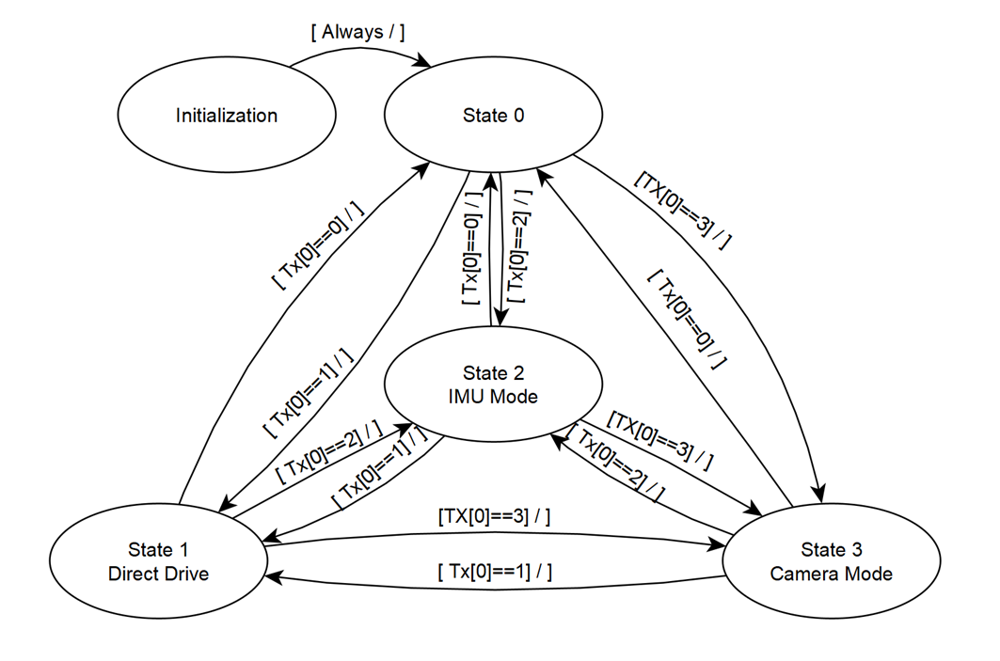
The main board begins by initializing all motors and sensors. It remains in a waiting state if the Bluetooth module is transmitting a mode of zero. When a value is received via the state buffer, the main board jumps to that drive mode. It’s also capable of continuously switching drive modes if the value transmitted over Bluetooth changes. It reads the first entry of the TX buffer to find what mode to be in.
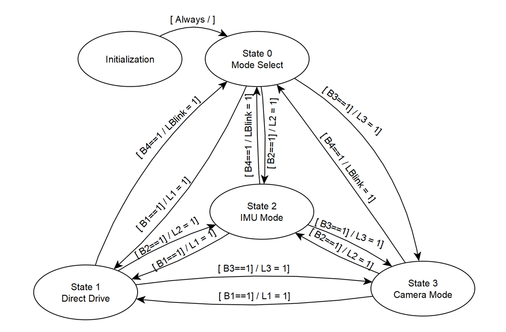
The remote board behaves very similarly. It has an identical number of states and modes, however, instead of receiving Bluetooth data it is the one responsible for transmitting it. The button inputs on the board are what cause the state transitions to occur. The IMU, potentiometer and button values are polled every cycle. During the transitions the status LEDs are set in order for a user to easily determine what drive mode they are in.
One of the driving modes and main objectives of this project was to use an IMU to provide tilt controls to aim the self-rolling ball to where we wanted it to go. In addition, an IMU was located on the robot to provide orientation feedback and prevent over spinning using a control loop. The first step was to derive a target direction based on the tilt input of the remote controller. The IMU we used was the BNO055 which was used in NDOF mode in order to access gyroscope and magnetometer modes. This allowed us to read Euler angles with a calibrated north for the yaw direction. To begin, the IMU data needed to be shifted and saturated to satisfy the trigonometric function that we were going to use within our calculations. This was done through several checks, sign flips, and shifts to accomplish what was shown in the following example.
Positive X Pitch Calibration
Uncorrected Pitch: -135° → -180°
Calibrated Pitch: 0° → 45°
All remote-control input was saturated to 45 degrees for ease of user control. Figure below shows how we can covert pitch and roll inputs into a directional vector on the XY plane.
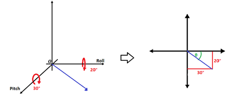
The following equations were then used to convert pitch and roll to a usable XY Vector. It’s important to note that in actual code these angles where implemented using radians rather than degrees. Also, when pitch is negative, pi must be added to theta to achieve all angles in XY.
θ = atan(pitch/roll) + π
Magnitude = √(〖pitch^2 +〖roll^2 )/(45°)
We divide the magnitude by 45 degrees as we want a magnitude of 1 to be a maximum tilt allowed by our remote controller. This maximum was introduced by our data calibration mentioned earlier. Doing only these steps produces a square output as seen below in the figure where the diagonals produce a greater output than 1 as each component can have a value of 45 degrees. By simply truncating any magnitude greater than 1 we can create a circular input that maintains an accurate θ.
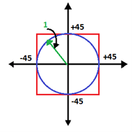
A key feature that we considered here was that a direct pitch and yaw conversion into the XY plain would mean that direction on the controller may not be aligned with the robot. For example, if you tilt towards the east wall but are facing north, the robot will interpret that differently than if you were also facing the east wall. To account for this, we need to subtract off the yaw angle from the calculated vector angle resulting in a direction relative to true north.
θ_Adjusted = θ_Calc - θ_Yaw
This concludes the process for finding the target vector for the input. The same exact process needs to be repeated for the robot orientation. The robot has a similar tilt in 3D space that can be flattened using the above procedure. In our case a magnitude of 1 corresponded to a tilt of 60° as we wanted the robot to stop accelerating when it reaches 60 degrees. Once again, the θ_Adjusted needs to be calculated using the robot yaw so that the robot interprets its pitch and roll in the same axis with the controller. The next step is to find the component of the robot orientation vector that is already in the direction of the target direction vector. For simplicity and consistency with our code, I will refer to the target as REM (short for remote controller) and current orientation as MAIN (short for main robot). Figure below shows how the two vectors overlap and what component we are looking for in green.
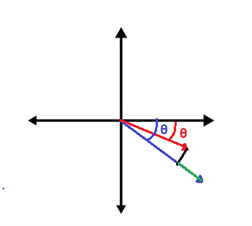
The following equation was used to find the magnitude of the green component. We are essentially trying to find the difference between the target and the component of the orientation that is in the same direction as the target.
MAG_Adjusted = Mag_REM - [Mag_MAIN*cos(θ_REM - θ_MAG)]
The resultant value increases with the distance of the robot from the target position. Our motor will attempt to reach a target position with proportional strength until that angle is met. The ball meanwhile continuously rolls meaning that the target keeps moving further and further away as the system attempts to balance around the center of mass.
Finally, it’s time to scale all three of our motors based on the calculated final vector. Figure shows an example of how 3 motors would align with the previously used example. It’s important to note that the Yaw off the robot needs to be added back into the equation to account for the alignment of the robot being on a different coordinate system than relative to north.
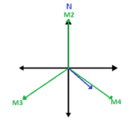
The following equations were used. These duties can end up negative if the vector points away from the motor’s direction. Motor 2 is straightforward, while the other ones were found by a theta shift resulting in a motor that acted vertically.
Duty2 = Mag_Adjusted*sin(θ_REM+Yaw_MAIN )*100
Duty3 = Mag_Adjusted*sin〖(θ_REM+Yaw_MAIN+2/3 π)*100〗
Duty4 = Mag_Adjusted*sin(θ_REM+Yaw_MAIN+5/3 π)*100
These values were then input directly into the three motors. This creates a control law that allows one IMU to control the movement of another. A shortcoming of this method is that only the component of the robot orientation in the direction of the input is considered. This means that the robot will not correct its alignment and just attempt to move in the new direction. I expect that if this control law was fully implemented it would feel “drifty”. This is because the residual effects of a previous orientation would continue to influence the movement of the robot perpendicular to the new target direction. Integral control could be added to this calculation by accumulating error. In this case that error would be the Mag_Adjusted value which is the difference between the target and orientation. Because this error is a vector in two-dimensional space, error from one target direction would contribute to a new direction perhaps creating some undesirable results with quick changes in target.
The control for the inertial was relatively simple, undeveloped, and untuned. The goal was to have the inertial motor begin spinning at a slow speed and ramp up to maximum duty, or the as long as the user holds down the button for. The slow ramp up in speed was to attempt to use friction and other resistive forces to prevent the ball from sinning immediately. If the ball began to spin instantly, then the braking of the inertial disk would cause the ball's rotation to go to zero as angular momentum is conserved. This is exactly what happened in our implementation. We created a simple P controller that would calculate the inertial disk's actual speed based on encoder readings and time passed, then compared that to a target speed that was generated using the following equation:
velocity = 1 - exp(-0.5t)
This gave us the ability to select a target waveform for the motor to spin up at, and while this did work, the startup speed was still too fast and the ball began moving immediately.
Although the camera was not used on the final model of our project, significant time was put into integrating it with our hardware. The idea behind the camera was to be able to take pictures of the environment, pick out an object in that environment, and drive towards the object. Seeing as we were using the F411 microcontroller, on-board image processing was out of the picture.
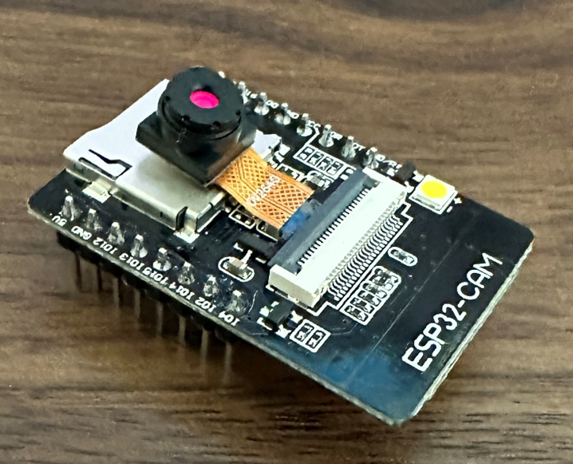
The camera used was the ESP32CAM AI Thinker. When initiated, this camera can connect to a local network when given a proper SSID and password. Once the camera is powered on, it attempts to establish connection with this local network. In testing, this worked with both local home Wi-Fi networks and personal hotspots on phones. Once connection with the network is established, the camera creates a web server on a port on our PC. This web server has buttons that allow us to start a livestream or take a picture. With this, we created a python script running on our PC that would open the created web server and click the take a picture button autonomously. Once the picture was taken, the script would save the photo and send it to another python function running OpenCV and begin image processing.
Through testing, we found that it was easiest and most practical to identify a flashlight in the photo. This was done through some simple image processing techniques where the image was switched to black and white, and all pixels under a certain range of magnitude were regarded as black. With that, only the brightest pixels remained. From there, contours were drawn around the remaining “blobs” and some following statements check the size and centroids of those contours to determine the validity and likelihood of that contour being the flashlight. Once the centroid is determined, the script feeds that data to a duty cycle calculator that was not able to be written. However, this script would simply determine where the centroid x and y coordinate was within the image along with the area of the contour to make an informed guess on magnitude and orientation of the direction vector.
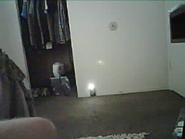 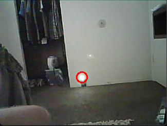
With duty cycles generated, the script now feeds into an http post request to post the duty cycles to a local webserver that we are running through XAMPP. This http post fills a table with an ID value of the post number along with all the duty cycles.
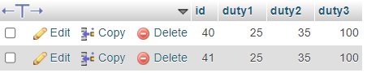
Next, the ESP32CAM runs http get requests from our local server at set intervals. Once the get request is fulfilled, the duty cycle data is transmitted over Wi-Fi to the camera where it gets loaded into a buffer and finally sent out to the F411 over SPI communications. When we injected random duty cycles into the script after image processing, the F411 was able to read and set those duties. A flowchart of order of operations is provided for clarity in the figure.
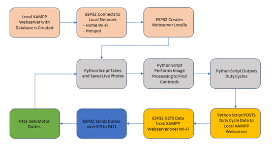
Below is all the python code used for image taking and taking and processing along with http Posting. Additionally, the Arduino code flashed to the ESP32 can be found in the CameraWebServer.ino file.
While the software implementation was in its beginning stages it, for the most part, functioned as we wanted it to. We needed an extra week or so to continue to tune some of the peripherals to do exactly what we wanted. One way we could have improved the software was to use polar coordinates instead of x-y-z. The use of cartesian coordinates was a real hinderance when it came to software implementation as we had to convert from polar to cartesian, then back again.